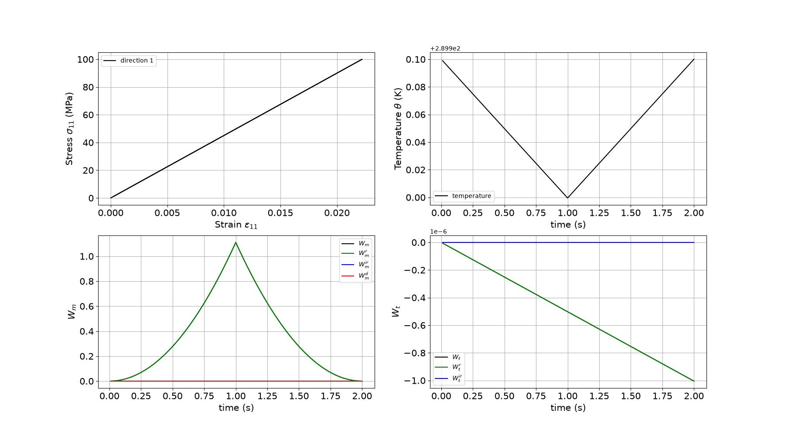

Note
Go to the end to download the full example code.
Orthotropic Elasticity Example
import os
import numpy as np
import simcoon as sim
import matplotlib.pyplot as plt
In orthotropic elastic materials, there are three mutually perpendicular planes of symmetry. The material has different mechanical properties in each of the three directions. Twelve parameters are required:
The Young modulus in direction 1: \(E_1\)
The Young modulus in direction 2: \(E_2\)
The Young modulus in direction 3: \(E_3\)
The Poisson ratio \(\nu_{12}\)
The Poisson ratio \(\nu_{13}\)
The Poisson ratio \(\nu_{23}\)
The shear modulus \(G_{12}\)
The shear modulus \(G_{13}\)
The shear modulus \(G_{23}\)
The coefficient of thermal expansion \(\alpha_1\)
The coefficient of thermal expansion \(\alpha_2\)
The coefficient of thermal expansion \(\alpha_3\)
The elastic stiffness tensor for an orthotropic material is written in the Voigt notation as:
The thermal expansion tensor is:
umat_name = "ELORT" # 5 character code for orthotropic elastic subroutine
nstatev = 1 # Number of internal variables
# Material parameters
E_1 = 4500.0 # Young's modulus in direction 1 (MPa)
E_2 = 2300.0 # Young's modulus in direction 2 (MPa)
E_3 = 2700.0 # Young's modulus in direction 3 (MPa)
nu_12 = 0.06 # Poisson ratio 12
nu_13 = 0.08 # Poisson ratio 13
nu_23 = 0.30 # Poisson ratio 23
G_12 = 2200.0 # Shear modulus 12 (MPa)
G_13 = 2100.0 # Shear modulus 13 (MPa)
G_23 = 2400.0 # Shear modulus 23 (MPa)
alpha_1 = 1.0e-5 # Thermal expansion in direction 1
alpha_2 = 2.5e-5 # Thermal expansion in direction 2
alpha_3 = 2.2e-5 # Thermal expansion in direction 3
psi_rve = 0.0
theta_rve = 0.0
phi_rve = 0.0
solver_type = 0
corate_type = 1
props = np.array(
[E_1, E_2, E_3, nu_12, nu_13, nu_23, G_12, G_13, G_23, alpha_1, alpha_2, alpha_3]
)
path_data = "../data"
pathfile = "ELORT_path.json"
The loading path is read in Python and the simulation runs in memory: no result
file is written, and the histories come back as component-first (6, N) arrays.
blocks, T_init, _ = sim.solver.load_path_json(os.path.join(path_data, pathfile))
res = sim.solver.solve(
blocks,
umat_name,
props,
nstatev,
T_init=T_init,
solver_type=solver_type,
corate=corate_type,
orientation=(psi_rve, theta_rve, phi_rve),
)
Plotting the results
We plot the stress-strain curve in the loading direction (direction 1).

Total running time of the script: (0 minutes 0.043 seconds)